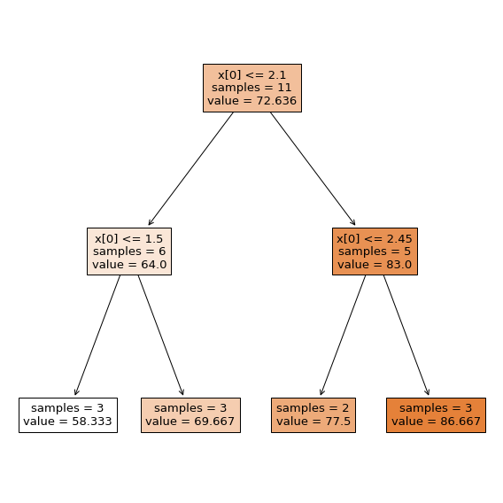
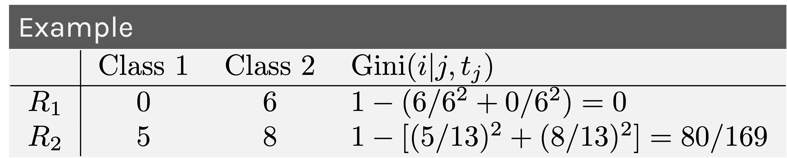
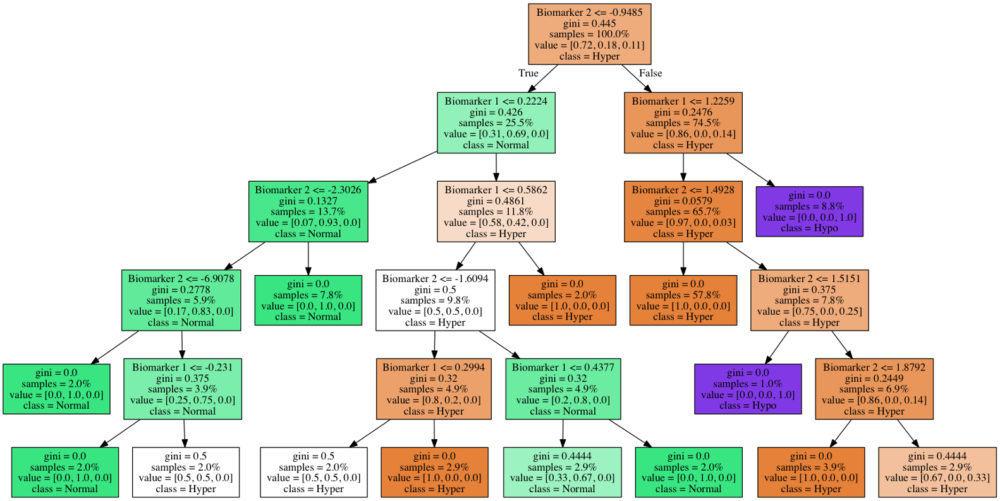
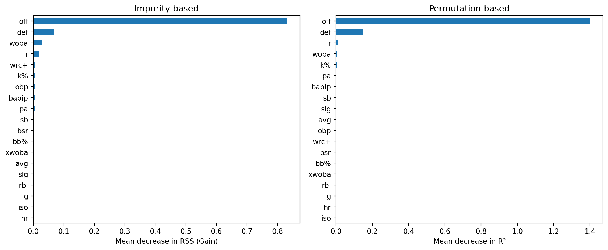

Week 8: Decision Trees, Random Forests, Boosting and Gradient Boosting
Outline
Part 1: Motivation for Classification and Regression Trees
Part 2: Decision Trees
Part 3: Ensemble methods including Bagging, Random Forests, Boosting, Gradient Boosting, XGBoost
Geometry of Data for Classification
The decision boundary is defined where the probability of being in class 1 and class 0 are equal, i.e.
\[P(Y=1) = P(Y=0) \rightarrow P(Y=1) = 0.5\] - In logistic regression this is equivalent the log-odds=0: \(x\beta=0\)
Geometry of Data for Classification
Here we are classifying vegetation and non-vegetation
The decision boundary is \[−0.8 x_1+x_2=0 \rightarrow x_2=0.8x_1\]
This translates to latitude \(=0.8\times\) longitude
Geometry of Data for Classification
Logistic regression for classification works best when the classes are well separated in the feature space
Linear boundaries are easy to interpret, but not straightforward in non-linear cases
Geometry of Data for Classification
LHS: Multiple linear boundaries that form squares will perform better
RHS: Circular boundaries will perform better
Geometry of Data for Regression
In regression, the goal is to predict a continuous outcome rather than a class label
Instead of finding decision boundaries that separate classes, we partition the feature space into regions where we predict the mean response
Linear regression fits a global model: \(\hat y = x\beta\), which works well when the relationship is linear
But what if the relationship is non-linear or involves interactions?
We could add polynomial terms or interaction terms, but this requires knowing the form in advance
GAM models were a step in this direction
Tree-based methods automatically discover non-linear relationships and interactions by recursively partitioning the feature space
Regression Trees
A regression tree splits the feature space into \(M\) distinct, non-overlapping regions \(R_1, R_2, \dots, R_M\)
For each region, we predict the mean of the training responses in that region: \[ \hat y_{R_m} = \frac{1}{|R_m|} \sum_{i \in R_m} y_i \]
To build the tree, we minimize the residual sum of squares (RSS): \[\text{RSS} = \sum_{m=1}^{M} \sum_{i \in R_m} (y_i - \hat{y}_{R_m})^2\]
At each step, we choose the predictor \(j\) and split point \(s\) that minimize: \[\sum_{i: x_i \in R_1(j,s)} (y_i - \hat y_{R_1})^2 + \sum_{i: x_i \in R_2(j,s)} (y_i - \hat y_{R_2})^2\]
Decision Trees
Simple flow charts can be formulated as mathematical models for both classification and regression.
Properties:
Interpretable by humans.
Sufficiently complex decision boundaries.
Locally linear decision boundaries.
Decision Tree: Classification
Involve stratifying or segmenting the space into simple regions.
Decision Tree: Splitting
Formally, a decision tree model is one in which the final outcome of the model is based on a series of comparisons of the values of predictors against threshold values. Each comparison and branching represents splitting a region in the feature space on a single feature. Typically, at each iteration, we split once along one dimension (one predictor).
Decision Tree Terminology
Root node: the top of the tree — contains all observations before any split
Internal node: where a split occurs — applies a rule like “is \(x_j \leq t\)?” and sends observations left or right
Split: the act of dividing a node into two child nodes based on a feature and threshold
Leaf node (terminal node): where splitting has stopped — holds the final prediction
Classification: the majority class in that leaf
Regression: the mean response in that leaf
Depth: how many splits deep a node is from the root
Every path from root to leaf represents a series of if-then rules — this is what makes decision trees interpretable
Decision Tree: Regression
Predict grade from study time
Decision Tree: Regression
The tree splits study time into \(M\) distinct, non-overlapping regions \(R_1, R_2, \dots, R_M\)

Learning the Tree Model
Start with an empty decision tree.
Choose the ‘optimal’ predictor and threshold for splitting.
Recurse on each new node until stopping condition is met.
Define the splitting criterion and stopping condition.
We need to define the splitting criterion and stopping condition
Greedy Algorithms
Always makes the choice that seems best at the moment.
Ensures local optimality at each step.
Makes greedy choices at each step to ensure that the objective function is optimized.
Never reverses a decision.
Example: Making change for $0.63
Available coins: quarters (25¢), dimes (10¢), nickels (5¢), pennies (1¢)
Greedy approach: always pick the largest coin that fits
25¢ → 25¢ → 10¢ → 1¢ → 1¢ → 1¢ = 6 coins
In decision trees: at each node, pick the single split (feature + threshold) that gives the best improvement — without considering whether a different split now might lead to a better tree overall
Optimality of Splitting
The greedy algorithm needs a metric to decide the “best” split at each node
No single ‘correct’ way to define an optimal split, but two common approaches:
Classification: minimize impurity — how mixed are the classes in each region?
Gini Index (most common), Entropy / Information Gain
Regression: minimize RSS — how far are observations from the region mean?
Common sense guidelines:
Feature space should grow progressively more pure (classification) or more homogeneous (regression) with splits
Fitness metric of a split should be differentiable
Avoid empty regions with no training points
Gini Index
The Gini Index is a metric used to measure the impurity or homogeneity of a dataset at a node.
It helps in determining the best feature to split on when building the tree.
Gini Index
Suppose we have \(J\) predictors, \(N\) number of training points and \(K\) classes.
Suppose we select the \(j\)-th predictor and split a region containing \(N\) number of training points along the threshold \(t_j \in R\).
We can assess the quality of this split by measuring the purity of each newly created region, \(R_1,R_2\). This metric is called the Gini Index: \[Gini = 1 - \sum_{i=1}^{k} p(k|R_i)^2\]
Gini Index
Understanding Gini Index
If all samples at a node belong to the same class, Gini = 0 (pure node).
If samples are evenly distributed among classes, Gini is maximized.
The goal of splitting in decision trees (like CART) is to minimize the Gini Index, leading to purer nodes.
Gini Index

We can try to find the predictor \(j\) and the threshold \(t_j\) that minimizes the average Gini Index over the two regions, weighted by the population of the regions (\(N_i\) is the number of training points in region \(R_i\)):
RSS for Regression Trees
For regression, we use Residual Sum of Squares (RSS) instead of Gini
At each split, choose the predictor \(j\) and threshold \(s\) that minimize the weighted RSS across the two new regions:
where \(\hat y_{R_m}\) is the mean response in region \(R_m\)
Intuition: a good split creates regions where the observations are close to their region mean — i.e., the variation within each region is small
Like Gini, the greedy algorithm tries every feature and every possible split point, and picks the one with the lowest RSS
Splitting Criteria: Summary
Classification
Regression
Goal
Maximize purity
Minimize variance
Metric
Gini Index
RSS
Prediction
Majority class in region
Mean response in region
Greedy choice
Split that reduces Gini most
Split that reduces RSS most
From Splitting to Stopping
We now know how to evaluate a split: Gini (classification) or RSS (regression)
The greedy algorithm keeps splitting — but when should it stop?
If we never stop, the tree grows until every leaf contains a single observation
Perfect training accuracy, but massive overfitting
We need a stopping condition to decide when a split is no longer worth making
Gain: Measuring Improvement from a Split
Gain measures how much a split improves the metric — it is the difference between the impurity (or RSS) of the parent node and the weighted average of the children:
where \(m\) is the splitting metric (Gini, entropy, or RSS), \(R\) is the parent region, \(R_1, R_2\) are the child regions, and \(N_1, N_2\) are their sizes
High gain: the split meaningfully separates the data — worth doing
Low gain: the split barely improves things — may not be worth the added complexity
Zero gain: no improvement — the split does nothing useful
Stopping Conditions
We can stop splitting when:
The gain falls below a threshold — the split doesn’t improve enough to justify
A node reaches a minimum number of observations (e.g., min_samples_leaf)
The tree reaches a maximum depth
A node is already pure (Gini = 0) or has zero RSS
Problem: What is the major issue with pre-specifying a stopping condition?
You may stop too early (miss useful splits deeper in the tree) or too late (overfit)
Solutions:
Try several thresholds and cross-validate to find the best one
Or: don’t stop at all — grow the full tree, then prune it back
Pruning
Instead of trying to find the right stopping condition up front, grow a large tree first, then cut it back
A fully grown tree overfits — it memorizes the training data, including noise

Pruning: How It Works
Cost-complexity pruning: add a penalty for tree size
\[\text{Cost}(T) = \text{RSS}(T) + \alpha |T|\] - \(|T|\) = number of leaf nodes, \(\alpha\) = complexity parameter - Small \(\alpha\): keep more leaves (complex tree) - Large \(\alpha\): penalize leaves heavily (simpler tree)
For each \(\alpha\), find the subtree that minimizes Cost(\(T\))
Use cross-validation to choose the best \(\alpha\)
Pruning: Before and After
The pruned tree is simpler, more interpretable, and generalizes better to new data
We trade a small increase in training error for a large decrease in test error
Summary: Decision trees
Decision trees partition training data into homogenous nodes / subgroups with similar response values.
Pros
Decision trees are very easy to explain to non-statisticians.
Easy to visualize and thus easy to interpret without assuming a parametric form
Cons
High variance, i.e. split a dataset in half and grow tress in each half, the result will be very different
Related note - they generalize poorly resulting in higher test set error rates
But there are several ways we can overcome this via ensemble models
Bagging
Bootstrap aggregation (aka bagging) is a general approach for overcoming high variance
Bootstrap: sample the training data with replacement
Aggregation: Combine the results from many trees together, each constructed with a different bootstrapped sample of the data
Bagging Algorithm
Start with a specified number of trees \(B\):
For each tree \(b\) in \(1, \dots, B\):
Construct a bootstrap sample from the training data
Grow a deep, unpruned, complicated (aka really overfit!) tree
To generate a prediction for a new point:
Regression: take the average across the \(B\) trees
Classification: take the majority vote across the \(B\) trees
assuming each tree predicts a single class (could use probabilities instead…)
Improves prediction accuracy via wisdom of the crowds - but at the expense of interpretability
Easy to read one tree, but how do you read \(B = 500\)?
But we can still use the measures of variable importance and partial dependence to summarize our models
Random Forest Algorithm
Random forests are an extension of bagging
For each tree \(b\) in \(1, \dots, B\):
Construct a bootstrap sample from the training data
Grow a deep, unpruned, complicated (aka really overfit!) tree but with a twist
At each split: limit the variables considered to a random subset\(m_{try}\) of original \(p\) variables
Predictions are made the same way as bagging:
Regression: take the average across the \(B\) trees
Classification: take the majority vote across the \(B\) trees
Split-variable randomization adds more randomness to make each tree more independent of each other
Introduce \(m_{try}\) as a tuning parameter: typically use \(p / 3\) (regression) or \(\sqrt{p}\) (classification)
\(m_{try} = p\) is bagging
Example data: MLB 2021 batting statistics
The MLB 2021 batting statistics leaderboard from Fangraphs
We aim to predict WAR (Wins Above Replacement), an advanced metric that estimates the total number of wins a player contributes to their team compared to a “replacement-level” player. A replacement-level player is a theoretical player who is readily available, typically a Triple-A call-up or a minimum-salary free agent, and represents the baseline of a “0.0 WAR” player
import pandas as pdimport numpy as npmlb_data = pd.read_csv("http://www.stat.cmu.edu/cmsac/sure/2021/materials/data/fg_batting_2021.csv")mlb_data.columns = mlb_data.columns.str.lower().str.replace(" ", "_")# fix strings with % in BB% and K% to make numericfor col in ["bb%", "k%"]:if col in mlb_data.columns: mlb_data[col] = mlb_data[col].astype(str).str.replace("%", "").str.strip() mlb_data[col] = pd.to_numeric(mlb_data[col], errors="coerce")model_mlb_data = mlb_data.drop(columns=["name", "team", "playerid"], errors="ignore")model_mlb_data.head()
g
pa
hr
r
rbi
sb
bb%
k%
iso
babip
avg
obp
slg
woba
xwoba
wrc+
bsr
off
def
war
0
82
354
27
66
69
2
14.4
17.2
0.336
0.346
0.336
0.438
0.671
0.462
0.439
194
0.2
40.9
-7.5
4.6
1
68
288
27
66
58
18
12.5
28.1
0.395
0.333
0.302
0.385
0.698
0.443
0.420
185
5.4
35.7
-3.2
4.2
2
79
347
16
61
52
0
13.5
17.0
0.231
0.324
0.298
0.398
0.529
0.397
0.377
157
-2.7
21.6
5.7
4.0
3
82
372
21
63
54
10
8.9
23.9
0.256
0.329
0.286
0.349
0.542
0.379
0.328
139
1.0
18.7
5.4
3.7
4
78
342
23
67
51
16
13.2
24.3
0.313
0.306
0.278
0.386
0.592
0.409
0.428
159
2.7
27.6
-2.2
3.7
MLB 2021 Batting Statistics: Variables
Column
Description
Column
Description
g
Games played
babip
Batting avg on balls in play
pa
Plate appearances
avg
Batting average
hr
Home runs
obp
On-base percentage
r
Runs scored
slg
Slugging percentage
rbi
Runs batted in
woba
Weighted on-base average
sb
Stolen bases
xwoba
Expected wOBA (Statcast)
bb%
Walk rate (%)
wrc+
Weighted runs created plus
k%
Strikeout rate (%)
bsr
Base running runs above avg
iso
Isolated power (SLG − AVG)
off
Offensive runs above avg
def
Defensive runs above avg
Target: war — Wins Above Replacement. Note, off, def, and bsr are direct components of WAR (WAR is approx Off + Def + BsR + replacement adjustment).
Example Random Forest
scikit-learn’s RandomForestRegressor is a popular implementation
Each bootstrap sample draws \(N\) observations with replacement from the original \(N\)
Some observations will be selected multiple times, others not at all
On average, about \(63\%\) of observations end up in any given bootstrap sample
The remaining \(\approx 37\%\) are called out-of-bag (OOB) observations for that tree
For each observation \(i\), roughly \(B/3\) trees were built without seeing it
We can predict observation \(i\) using only those trees — giving a built-in test set estimate without needing cross-validation
OOB: Why 63%?
The probability that observation \(i\) is not selected in a single draw is \(\left(1 - \frac{1}{N}\right)\)
After \(N\) draws with replacement: \(P(\text{not in sample}) = \left(1 - \frac{1}{N}\right)^N \approx e^{-1} \approx 0.368\)
So \(P(\text{in sample}) \approx 1 - 0.368 = 0.632\), i.e. about \(63\%\)
This means each tree has a free validation set of ~37% of the data
The OOB error is computed by aggregating predictions for each observation using only the trees that did not include it in training
OOB in the MLB example
# Refit with oob_score=True to get OOB R²oob_rf = RandomForestRegressor(n_estimators=50, oob_score=True, random_state=42)oob_rf.fit(X, y)print(f"R² (training): {oob_rf.score(X, y):.4f}")print(f"R² (OOB): {oob_rf.oob_score_:.4f}")
R² (training): 0.9876
R² (OOB): 0.9144
The training R² is high because the model has seen this data
The OOB R² is a more honest estimate of performance on unseen data.
Tuning Hyperparameters
A model’s hyperparameters are settings chosen before training — they control how the model learns, not what it learns
Default values often work reasonably well, but tuning can significantly improve performance
Under-tuned model: may underfit (too simple) or overfit (too complex)
Well-tuned model: finds the sweet spot between bias and variance
Tuning is done via cross-validation: try different hyperparameter values, evaluate each on held-out folds, and pick the combination that generalizes best
This is especially important for ensemble methods where multiple hyperparameters interact with each other
Random Forest Hyperparameters
Parameter
scikit-learn
What it controls
Number of trees
n_estimators
More trees = more stable predictions, but slower
Features per split
max_features
Most important: controls \(m_{try}\), the randomness at each split
Max tree depth
max_depth
How deep each tree can grow (limits complexity)
Min samples to split
min_samples_split
A node must have at least this many observations to be split
Min samples in leaf
min_samples_leaf
Each leaf must contain at least this many observations
Bootstrap
bootstrap
Whether to use bootstrap sampling (True) or full dataset (False)
Max leaf nodes
max_leaf_nodes
Cap on total number of leaves per tree
max_features is the most important — it controls the bias-variance tradeoff
Small max_features: trees are more different (less correlated), but individually weaker
Large max_features: trees are stronger individually, but more similar to each other
Rule of thumb: \(p/3\) for regression, \(\sqrt{p}\) for classification
Tuning Random Forests
Important: max_features (equivalent to \(m_{try}\))
Marginal: tree complexity, splitting rule, sampling scheme
After fitting a random forest, we want to know: which features matter most?
Two common approaches:
Impurity-based (Gain): total reduction in the splitting criterion (e.g. RSS for regression, Gini for classification) each time a feature is used to split, averaged over all trees
Permutation-based: randomly shuffle one feature’s values and measure how much the model’s accuracy drops — bigger drop = more important
Impurity-based importance is fast (computed during training) but can be biased toward high-cardinality features
Permutation importance is more reliable but slower (requires re-prediction)
Variable Importance: MLB Example
from sklearn.inspection import permutation_importance# Impurity-based (gain)gain_imp = pd.Series( oob_rf.feature_importances_, index=X.columns).sort_values(ascending=True)# Permutation-basedperm = permutation_importance( oob_rf, X, y, n_repeats=10, random_state=42)perm_imp = pd.Series( perm.importances_mean, index=X.columns).sort_values(ascending=True)fig, axes = plt.subplots(1, 2, figsize=(12, 5))gain_imp.plot.barh(ax=axes[0])axes[0].set_xlabel("Mean decrease in RSS (Gain)")axes[0].set_title("Impurity-based")perm_imp.plot.barh(ax=axes[1])axes[1].set_xlabel("Mean decrease in R²")axes[1].set_title("Permutation-based")plt.tight_layout()plt.show()

Boosting
Build ensemble models sequentially
start with a weak learner, e.g. small decision tree with few splits
each model in the sequence slightly improves upon the predictions of the previous models by focusing on the observations with the largest errors / residuals
Boosted trees algorithm
Write the prediction at step \(t\) of the search as \(\hat y_i^{(t)}\), start with \(\hat y_i^{(0)} = 0\)
Fit the first decision tree \(f_1\) to the data: \(\hat y_i^{(1)} = f_1(x_i) = \hat y_i^{(0)} + f_1(x_i)\)
Fit the next tree \(f_2\) to the residuals of the previous: \(y_i - \hat y_i^{(1)}\)
Add this to the prediction: \(\hat y_i^{(2)} = \hat y_i^{(1)} + f_2(x_i) = f_1(x_i) + f_2(x_i)\)
Fit the next tree \(f_3\) to the residuals of the previous: \(y_i - \hat y_i^{(2)}\)
Add this to the prediction: \(\hat y_i^{(3)} = \hat{y}_i^{(2)} + f_3(x_i) = f_1(x_i) + f_2(x_i) + f_3(x_i)\)
Continue until some stopping criteria to reach final model as a sum of trees:
\[\hat{y_i} = f(x_i) = \sum_{b=1}^B f_b(x_i)\]
Visual example of boosting in action
Gradient boosted trees
Regression boosting algorithm can be generalized to other loss functions via gradient descent - leading to gradient boosted trees, aka gradient boosting machines (GBMs)
Update the model parameters in the direction of the loss function’s descending gradient
Tune the learning rate in gradient descent
We need to control how much we update by in each step - the learning rate
Stochastic gradient descent can help with complex loss functions
Batch gradient descent computes the gradient using all\(N\) observations — expensive, and can get stuck in local minima
Stochastic GD randomly samples a subset of data each iteration
The gradient estimate is noisier, which actually helps:
Escape local minima and saddle points
Each update is cheaper to compute
Adds a regularization effect — noisy updates prevent overfitting
Variable importance tells us which features matter, but not how they affect predictions
Partial dependence plots show the marginal effect of a feature on the predicted outcome
How it works: for a feature \(x_j\), evaluate the model at each value of \(x_j\) while averaging over all other features: \[\hat{f}_j(x_j) = \frac{1}{N} \sum_{i=1}^{N} \hat{f}(x_j, \, x_{i,-j})\]
Flat line → feature has little effect on predictions
Steep slope → predictions are sensitive to that feature
Non-linear shape → model learned a relationship that linear regression would miss
PDPs work with any model (random forests, GBMs, etc.), not just XGBoost
Partial Dependence: MLB Example
This is the partial dependence parameter for the off variable